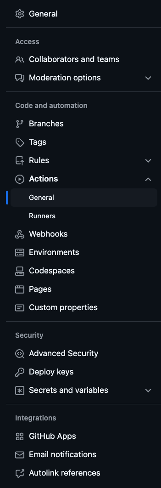
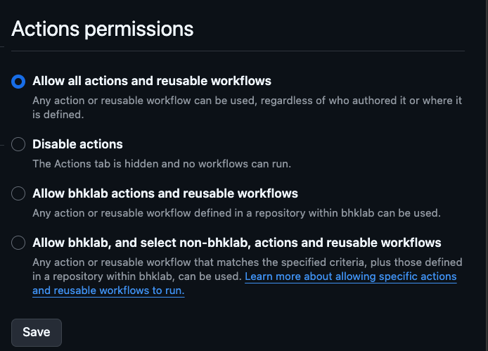
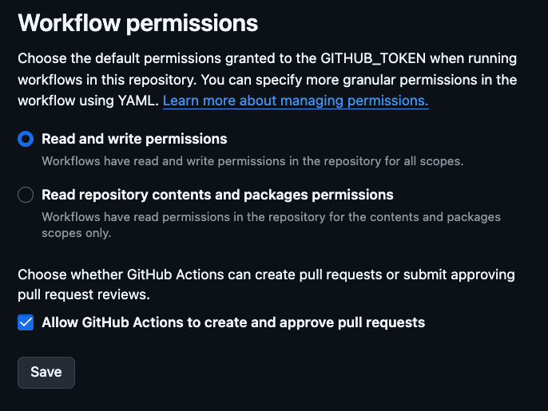
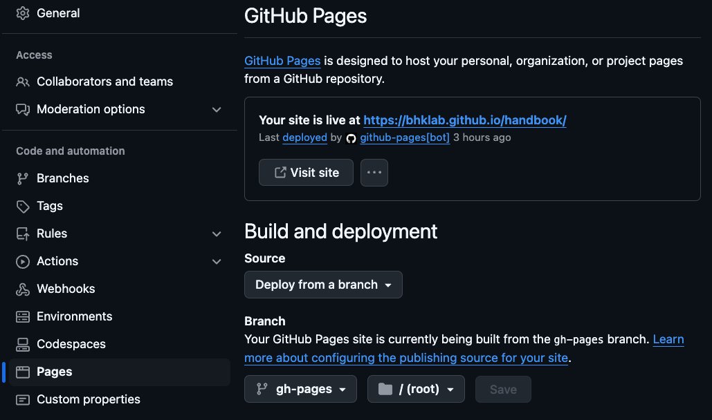

Troubleshooting
I have tried to simplify this setup as much as possible including the setup of the remote GitHub repository and the GitHub Actions workflow, and deploying the documentation to GitHub Pages. However in case you run into issues, here are some troubleshooting steps.
Setting up GitHub Actions
Step 1: Go to settings > Actions > General in your GitHub repository.

Step 2: Select Allow all actions and reusable workflows in the Workflow permissions section + CLICK Save

Step 3: Scroll down to the Workflow permissions section and select Read and write permissions AND Allow GitHub Actions to create and approve pull requests

Setting up GitHub Pages
Warning
Before being able to deploy the documentation, you need to set up GitHub Pages.
This is a one-time setup for the repository. The documentation will be deployed
automatically to GitHub Pages when you push to the main branch.
However, you need to create a gh-pages branch in your repository.
You can do this by running the following command:
```
git branch gh-pages
git push origin gh-pages
```
This is only possible after you have created the repository on GitHub.
The template will use mkdocs to build the documentation and deploy it to GitHub Pages.
To set up GitHub Pages, follow these steps:
Step 1: Go to settings > Pages in your GitHub repository.
Step 2: Select Deploy from a branch in the Source section.
Step 3: Select gh-pages branch and / (root) folder in the Branch section.
Step 4: Click Save.
